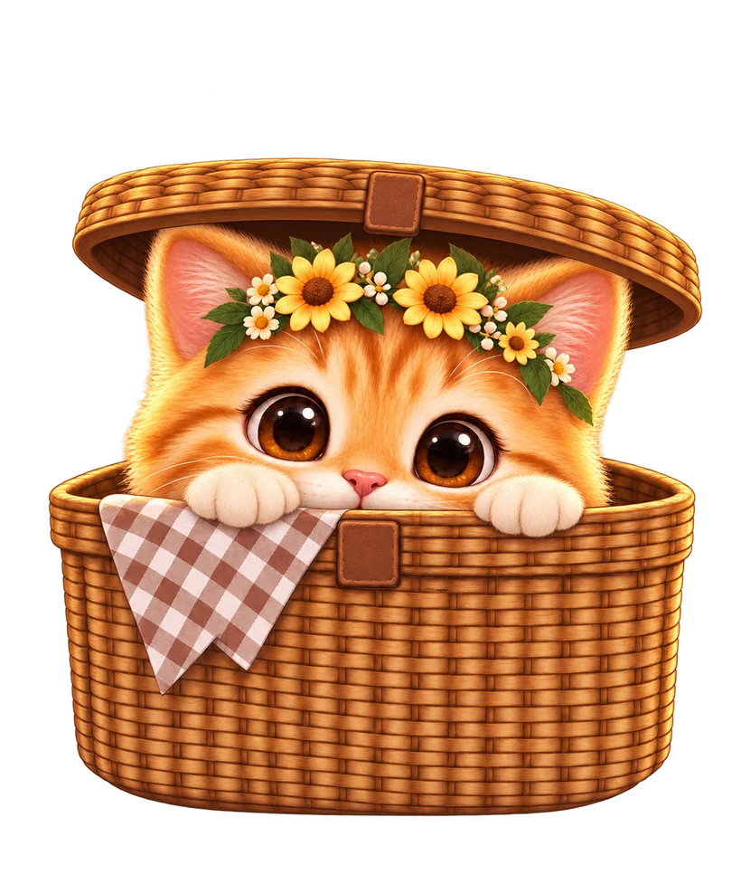
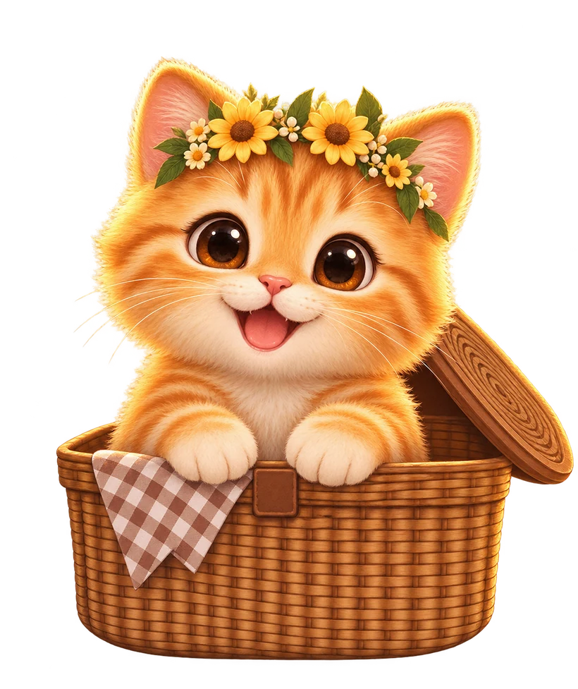
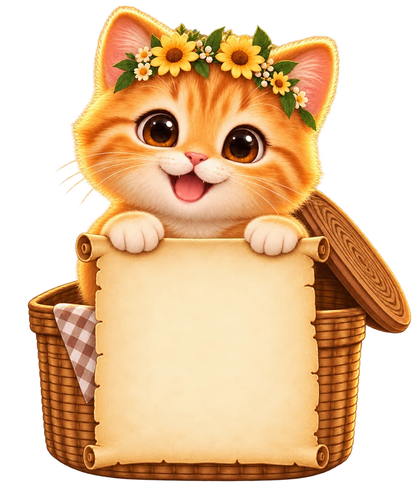
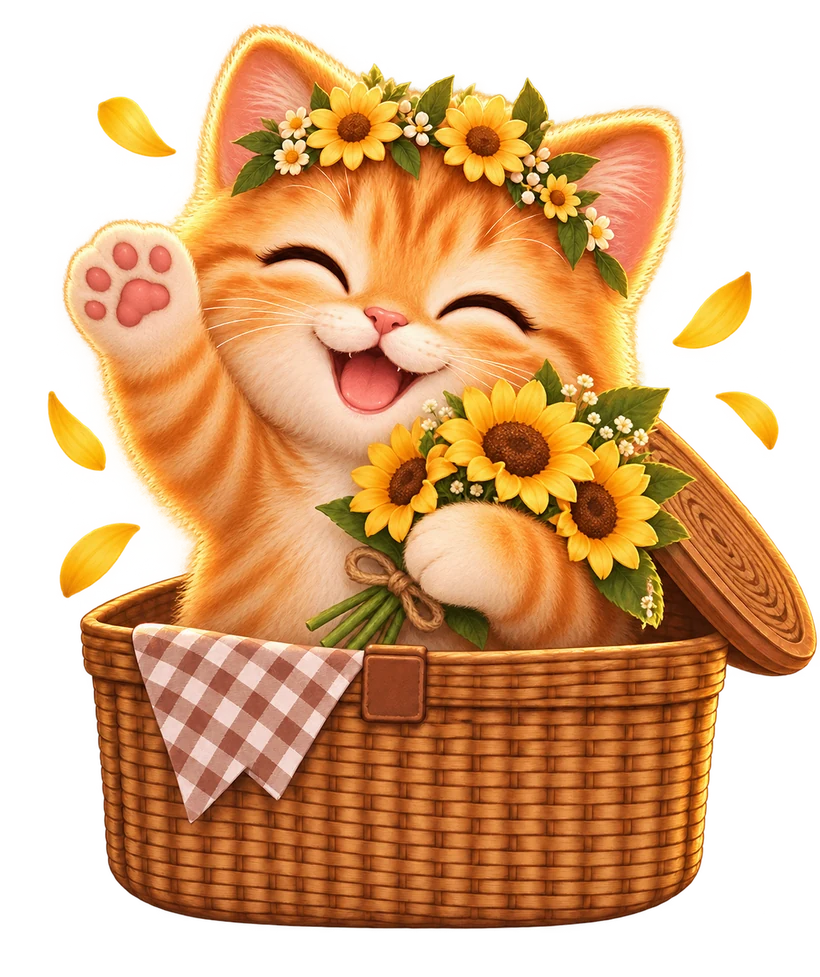

A veces,
las cosas más bonitas
también amanecen...
Pss... creo que hay algo aquí
Toca la canastita
↓




Para ti ♥
Toca cada mensaje para leerlo
A veces,
las cosas más bonitas
también amanecen...




Toca cada mensaje para leerlo